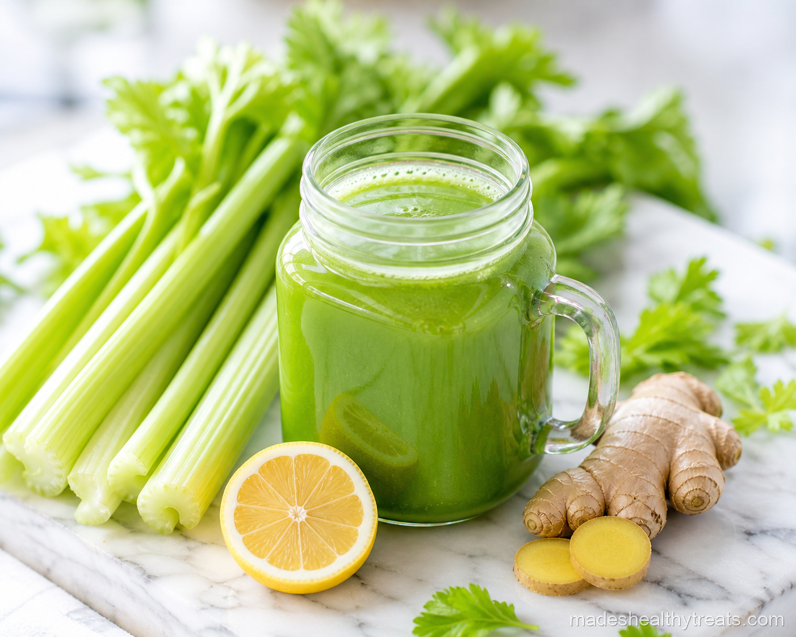

Why I Juice This One
I juice this one because celery and cucumber make me feel hydrated in a way plain water sometimes does not. Lemon keeps the flavor bright, and ginger adds the tiny warm spark that makes the whole jar taste alive instead of grassy.
When I make this, I do not expect miracles. I expect a crisp green drink that helps me start the day with more water, more minerals, and a calmer appetite. That is enough for me.

Here's What You'll Need
You will need four large stalks of fresh celery, one whole cucumber, the juice of one lemon, a one inch piece of fresh ginger peeled, one cup of cold water, and a generous handful of ice.
How I Make It
I chop the celery and cucumber into blender friendly pieces first, because celery strings like to pretend they are stronger than technology. Then I add the lemon juice, peeled ginger, cold water, and ice, and I blend everything on high for about 60 seconds until it looks very green and very blended.
To turn it into juice, I pour the mixture through a fine mesh strainer or nut milk bag set over a bowl. I press and squeeze until the pulp looks tired and the juice below is smooth. Then I pour it over ice into a mason jar and drink it right away while it tastes fresh and cold.
Made's Tips
Use celery that still snaps when you bend it, because limp celery makes a flat tasting juice.
If the flavor feels too green at first, add an extra squeeze of lemon and a few cucumber slices before blending.
I like this best very cold, so I chill the cucumber ahead of time when I remember.